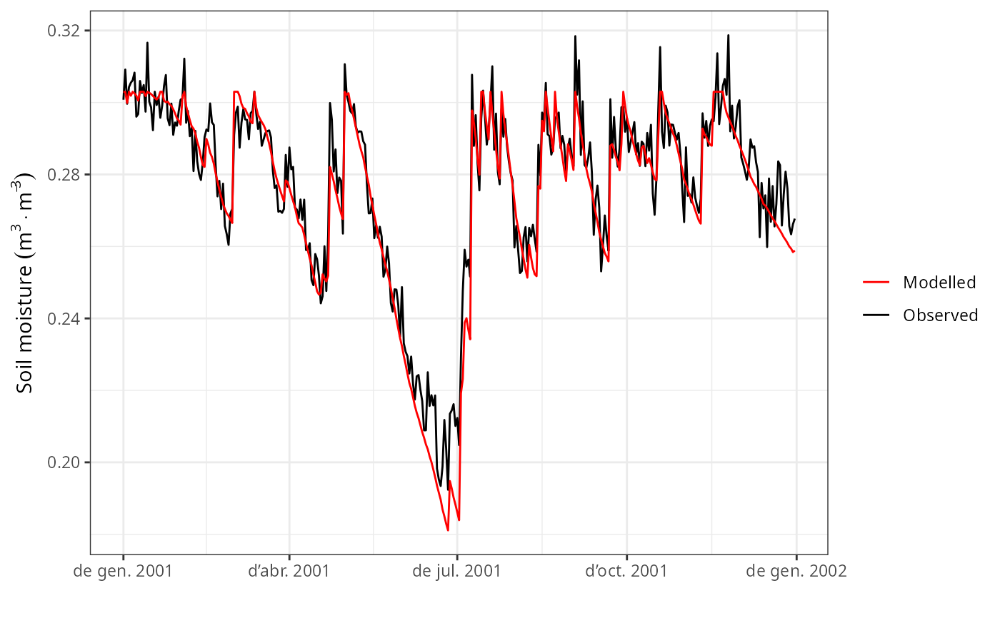

evaluation.RdFunctions to compare model predictions against observed values.
evaluation_table(out, measuredData, type = "SWC", cohort = NULL,
temporalResolution = "day")
evaluation_stats(out, measuredData, type="SWC", cohort = NULL,
temporalResolution = "day")
evaluation_plot(out, measuredData, type="SWC", cohort = NULL,
temporalResolution = "day",
plotType = "dynamics")
evaluation_metric(out, measuredData, type="SWC", cohort=NULL,
temporalResolution = "day",
metric = "loglikelihood")A data frame with observed/measured values. Dates should be in row names, whereas columns should be named according to the type of output to be evaluated (see details).
A string with the kind of model output to be evaluated. Accepted values are "SWC" (soil moisture content), "REW" relative extractable water, "ETR" (total evapotranspiration), "SE+TR" (modelled soil evaporation + transpiration against observed total evapotranspiration), "E" (transpiration per leaf area), "LFMC" (Live fuel moisture content), "WP" (plant water potentials), "BAI" (basal area increment), "DI" (diameter increment), "DBH" (diameter at breast height) or "Height" (plant height).
A string of the cohort to be compared (e.g. "T1_68"). If NULL results for the first cohort will be evaluated.
A string to indicate the temporal resolution of the model evaluation, which can be "day", "week", "month" or "year". Observed and modelled values are aggregated temporally (using either means or sums) before comparison.
Plot type to draw, either "dynamics" or "scatter".
An evaluation metric:
"MAE": Mean absolute error.
"MAE.rel": Mean absolute error in relative terms.
"r": Pearson's linear correlation coefficient.
"NSE": Nash-Sutcliffe model efficiency coefficient.
"NSE.abs": Modified Nash-Sutcliffe model efficiency coefficient (L1 norm) (Legates & McCabe 1999).
"loglikelihood": Logarithm of the likelihood of observing the data given the model predictions, assuming independent Gaussian errors.
Users should provide the appropriate columns in measuredData, depending on the type of output to be evaluated:
"SWC" or "REW": A column named "SWC" should be present, containing soil moisture content in percent volume. When type="REW", observed values are divided by the 90% quantile, which is assumed to be the moisture content at field capacity.
"ETR" or "SE+TR": A column named "ETR" should be present, containing stand's evapotranspiration in mm/day (or mm/week, mm/month, etc, depending on the temporal resolution). If type="ETR" observed values will be compared against modelled evapotranspiration (i.e. sum of transpiration, soil evaporation and interception loss), whereas if type= "SE+TR" observed values will be compared against the sum of transpiration and soil evaporation only.
"E": For each plant cohort whose transpiration is to be evaluated, a column starting with "E_" and continuing with a cohort name (e.g. "E_T1_68") with transpiration in L/m2/day on a leaf area basis (or L/m2/week, L/m2/month, etc, depending on the temporal resolution).
"LFMC": For each plant cohort whose transpiration is to be evaluated, a column starting with "FCM_" and continuing with a cohort name (e.g. "FMC_T1_68") with fuel moisture content as percent of dry weight.
"WP": For each plant cohort whose transpiration is to be evaluated, two columns, one starting with "PD_" (for pre-dawn) and the other with "MD_" (for midday), and continuing with a cohort name (e.g. "PD_T1_68"). They should contain leaf water potential values in MPa. These are compared against sunlit water potentials.
"BAI": For each plant cohort whose growth is to be evaluated, a column starting with "BAI_" and continuing with a cohort name (e.g. "BAI_T1_68") with basal area increment in cm2/day, cm2/week, cm2/month or cm2/year, depending on the temporal resolution.
"DI": For each plant cohort whose growth is to be evaluated, a column starting with "DI_" and continuing with a cohort name (e.g. "DI_T1_68") with basal area increment in cm/day, cm/week, cm/month or cm/year, depending on the temporal resolution.
"DBH": For each plant cohort whose growth is to be evaluated, a column starting with "DBH_" and continuing with a cohort name (e.g. "DBH_T1_68") with DBH values in cm.
"Height": For each plant cohort whose growth is to be evaluated, a column starting with "Height_" and continuing with a cohort name (e.g. "Height_T1_68") with Height values in cm.
Additional columns may exist with the standard error of measured quantities. These should be named as the referred quantity, followed by "_err" (e.g. "PD_T1_68_err"), and are used to draw confidence intervals around observations.
Row names in measuredData indicate the date of measurement (in the case of days). If measurements refer to months or years, row names should also be in a "year-month-day" format, although with "01" for days and/or months (e.g. "2001-02-01" for february 2001, or "2001-01-01" for year 2001).
Function evaluation_table returns a data frame with dates, observed and predicted values.
Function evaluation_stats returns evaluation statistics (a vector or a data frame depending on type):
Bias: Mean deviation (positive values correspond to model overestimations).
Bias.rel: Bias in relative terms (%).
MAE: Mean absolute error.
MAE.rel: Mean absolute error in relative terms (%).
r: Pearson's linear correlation coefficient.
NSE: Nash-Sutcliffe model efficiency coefficient.
NSE.abs: Modified Nash-Sutcliffe model efficiency coefficient (L1 norm) (Legates & McCabe 1999).
Function evaluation_plot returns a ggplot object.
Function evaluation_metric returns a scalar with the desired metric.
Legates, D.R., McCabe, G.J., 1999. Evaluating the use of “goodness-of-fit” measures in hydrologic and hydroclimatic model validation. Water Resour. Res. 35, 233–241.
#Load example daily meteorological data
data(examplemeteo)
#Load example plot plant data
data(exampleforestMED)
#Default species parameterization
data(SpParamsMED)
#Initialize soil with default soil params (4 layers)
examplesoil = soil(defaultSoilParams(4))
#Initialize control parameters
control = defaultControl("Granier")
#Initialize input
x1 = forest2spwbInput(exampleforestMED,examplesoil, SpParamsMED, control)
#Call simulation function
S1<-spwb(x1, examplemeteo, latitude = 41.82592, elevation = 100)
#> Initial soil water content (mm): 291.257
#> Initial snowpack content (mm): 0
#> Performing daily simulations
#>
#> [Year 2001]:....................................
#>
#> Final soil water content (mm): 272.993
#> Final snowpack content (mm): 0
#> Change in soil water content (mm): -18.264
#> Soil water balance result (mm): -18.264
#> Change in snowpack water content (mm): 0
#> Snowpack water balance result (mm): 7.10543e-15
#> Water balance components:
#> Precipitation (mm) 513
#> Rain (mm) 462 Snow (mm) 51
#> Interception (mm) 96 Net rainfall (mm) 366
#> Infiltration (mm) 408 Runoff (mm) 9 Deep drainage (mm) 123
#> Soil evaporation (mm) 25 Transpiration (mm) 278
#> Plant extraction from soil (mm) 278 Plant water balance (mm) -0 Hydraulic redistribution (mm) 6
#Load observed data (in this case the same simulation results with some added error)
data(exampleobs)
#Evaluation statistics for soil water content
evaluation_stats(S1, exampleobs)
#> n Bias Bias.rel MAE MAE.rel
#> 365.000000000 -0.002465962 -0.890217990 0.005316782 1.919370293
#> r NSE NSE.abs
#> 0.967054210 0.917216274 0.697529782
#NSE only
evaluation_metric(S1, exampleobs, metric="NSE")
#> [1] 0.9172163
#Comparison of temporal dynamics
evaluation_plot(S1, exampleobs)

#Loglikelihood value
evaluation_metric(S1, exampleobs)
#> [1] 1026.114